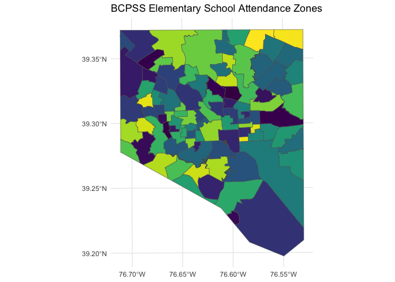
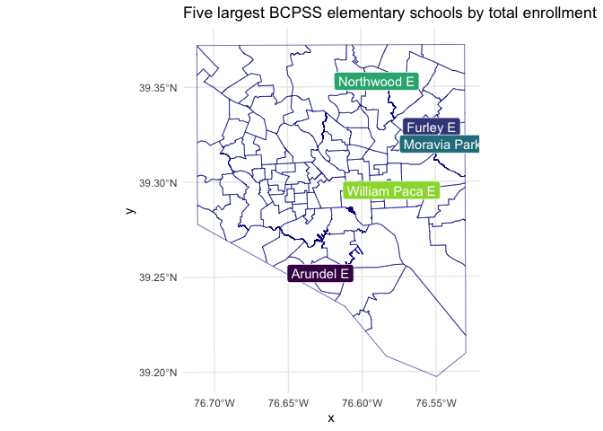
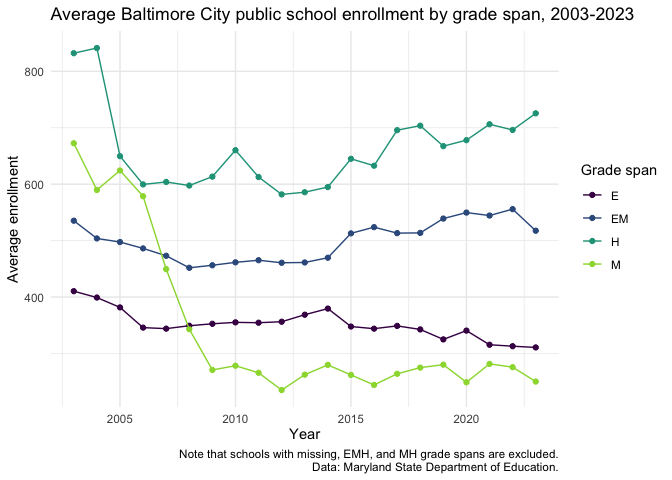
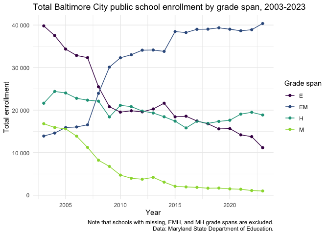

The goal of bcpss is to make data from the Baltimore City Public School system more consistent and accessible to R users. This package may pair well with the mapbaltimore package that offers a broader range of Baltimore-specific datasets and functions for working with that data.
Installation
You can install the development version from GitHub with:
# install.packages("remotes")
remotes::install_github("elipousson/bcpss")Example
library(bcpss)
library(tidyverse)
#> ── Attaching core tidyverse packages ──────────────────────── tidyverse 2.0.0 ──
#> ✔ dplyr 1.1.3 ✔ readr 2.1.4
#> ✔ forcats 1.0.0 ✔ stringr 1.5.1
#> ✔ ggplot2 3.4.4 ✔ tibble 3.2.1
#> ✔ lubridate 1.9.3 ✔ tidyr 1.3.0
#> ✔ purrr 1.0.2
#> ── Conflicts ────────────────────────────────────────── tidyverse_conflicts() ──
#> ✖ dplyr::filter() masks stats::filter()
#> ✖ dplyr::lag() masks stats::lag()
#> ℹ Use the conflicted package (<http://conflicted.r-lib.org/>) to force all conflicts to become errors
theme_set(theme_minimal())Currently, this package includes datasets that include school and grade-level enrollment and demographic data, the published results from a parent survey, and the published results from a combined student and educator survey completed in 2019. This data can be used to answer questions, such as, what are the elementary schools with the greatest total student enrollment?
top_5_es <- enrollment_demographics_SY1920 |>
filter(
grade_range == "All Grades",
grade_band == "E"
) |>
select(school_number, school_name, total_enrollment) |>
top_n(5, total_enrollment) |>
arrange(desc(total_enrollment))
top_5_es_caption <- "Five largest BCPSS elementary schools by total enrollment"
knitr::kable(top_5_es, caption = top_5_es_caption)| school_number | school_name | total_enrollment |
|---|---|---|
| 105 | Moravia Park Elementary School | 763 |
| 242 | Northwood Elementary School | 590 |
| 164 | Arundel Elementary School | 523 |
| 83 | William Paca Elementary School | 509 |
| 206 | Furley Elementary School | 495 |
Five largest BCPSS elementary schools by total enrollment
Both the enrollment/demographic data and the parent survey are available in both a wide and long format.
The package also includes spatial data for elementary school attendance zones and program locations for the 2020-2021 school year.
bcps_es_zones_SY2021 |>
ggplot() +
geom_sf(aes(fill = zone_name)) +
scale_fill_viridis_d() +
guides(fill = "none") +
labs(title = "BCPSS Elementary School Attendance Zones")
These two sources can be used in combinations by joining the program_number in the spatial data with the equivalent school_number used in the survey and demographic data.
top_5_es_map <- bcps_programs_SY2021 |>
left_join(top_5_es, by = c("program_number" = "school_number")) |>
filter(!is.na(total_enrollment)) |>
ggplot() +
geom_sf(data = bcps_es_zones_SY2021, fill = NA, color = "darkblue") +
geom_sf(aes(color = school_name)) +
geom_sf_label(aes(label = program_name_short, fill = school_name), color = "white") +
scale_fill_viridis_d(end = 0.85) +
guides(fill = "none", color = "none") +
labs(title = top_5_es_caption)
top_5_es_map
The bcpss_enrollment data is a subset of the statewide data available through the {marylandedu} package (a tidied version of data downloads available from the Maryland State Department of Education).
Using the marylandedu::md_nces_directory data, you can summarise enrollment by year and grade span:
baltimore_nces_directory <- marylandedu::md_nces_directory |>
select(year, lss_name, school_number, grade_span)
bcpss_enrollment_summary <- bcpss_enrollment |>
dplyr::filter(
school_number != 0,
race == "All",
grade_range == "All Grades"
) |>
left_join(
baltimore_nces_directory,
by = join_by(lss_name, year, school_number)
) |>
summarise(
n_schools = n_distinct(school_number),
enrolled_count_mean = mean(enrolled_count, na.rm = TRUE),
enrolled_count_total = sum(enrolled_count, na.rm = TRUE),
.by = c(lss_name, year, grade_span)
) |>
filter(
# Exclude missing and uncommon grade span values
!is.na(grade_span),
!(grade_span %in% c("EMH", "MH"))
)The summary data can be plottted:
# Create a convenience plotting function
bcpss_enrollment_summary_plot <- function(data = NULL, mapping = aes(), ...) {
ggplot(data = data, mapping = mapping) +
geom_point() +
geom_line() +
labs(
x = "Year",
...,
color = "Grade span",
caption = paste0(
"Note that schools with ",
knitr::combine_words(c("missing", "EMH", "MH")),
" grade spans are excluded.\nData: Maryland State Department of Education."
)
) +
scale_y_continuous(labels = scales::label_number()) +
scale_color_viridis_d(end = 0.85)
}
bcpss_enrollment_summary |>
bcpss_enrollment_summary_plot(
aes(x = year, y = enrolled_count_mean, color = grade_span),
y = "Average enrollment",
title = "Average Baltimore City public school enrollment by grade span, 2003-2023"
)
Note that this summary is incomplete without the accompanying total enrollment count showing the shift from elementary to elementary middle schools
bcpss_enrollment_summary |>
bcpss_enrollment_summary_plot(
aes(x = year, y = enrolled_count_total, color = grade_span),
y = "Total enrollment",
title = "Total Baltimore City public school enrollment by grade span, 2003-2023"
)
Related projects
U.S. Education data
-
educationdata: Retrieve data from the Urban Institute’s Education Data API as a
data.framefor easy analysis. - EdSurvey: EdSurvey is an R statistical package designed for the analysis of national and international education data from the National Center for Education Statistics (NCES).
- edbuildr: Import EdBuild’s master dataset of school district finance, student demographics, and community economic indicators for every school district in the United States.
- Elementary School Operating Status + NCES 2019-2020 School District Boundaries
Other local area education data
- CPSenrollpack: “R package of enrollment data for Chicago Public High Schools, 2006-07 to 2018-19”